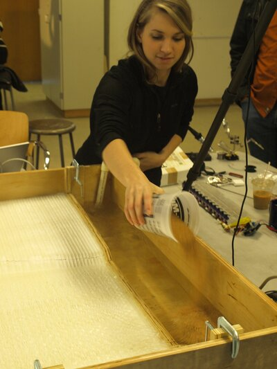

DredgeFest was a series of public programs organized by the Dredge Research Collaborative that treated dredging, the mechanical excavation and relocation of sediment from waterways, as cultural, political, and designable infrastructure. For DredgeFest Louisiana (January 2014) at LSU, three workshops were hosted at the Robert Reich School of Landscape Architecture, each examining innovative methodologies of sediment manipulation at multiple scales. The “Adaptive Devices” workshop, led by Cantrell with Justine Holzman and David Merlin, explored how sensing and real-time feedback can alter the flow of sediment at localized sites. Participants used a small-scale fluvial model and physical computing, Arduino microcontrollers with the Firefly plugin for Grasshopper, servo motors, and shape memory alloys, to prototype responsive sedimentary infrastructures. The workshop staged a direct encounter between computational design tools and hydrological processes, prototyping at tabletop scale the kind of responsive infrastructure the dissertation theorizes at territorial scale.
DredgeFest addressed fundamental questions about the relationship between infrastructure, culture, and design: What happens when a mundane industrial process — the mechanical relocation of sediment — is reframed as a cultural and design practice? How can public programming transform technical infrastructure into a subject of collective imagination and democratic deliberation?
The Dredge Research Collaborative organized a series of public events that treated dredging as simultaneously a technical challenge, a political practice, and a design opportunity. By bringing together scientists, engineers, artists, and designers alongside community members and agency staff, DredgeFest demonstrated that the governance of sediment — the material that builds and erases coastlines — is not merely an engineering question but a cultural one.
The project raised questions about the role of the designer in infrastructural discourse: Can public programming shift the terms of technical debate? And how might landscape architects position themselves not as form-givers but as conveners — building the social infrastructure through which territorial decisions are made?
